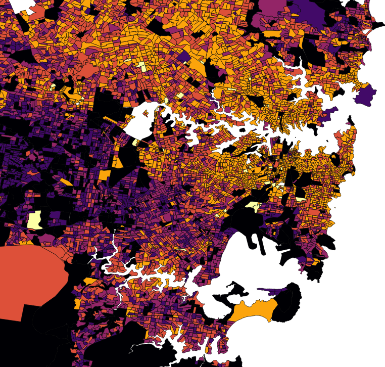

What's the PROBLEM??
The data show that men have exponentially more jobs in a professional area than women,
eg. Biologist, chemist architect, graphic designer, etc.
It's a clear lack of equality and my design aims to fix that
Male Professionals
The chart shows that the majority of tiles are coloured, light orange.
Each light orange tile indicates that there are 141-398 Male professionals in that area.

Female Professionals
The female division displays a majority of light purple tiles,
which indicate 23-38 female professionals in those areas. This shows that male professionals are possibly tripling
the number of female professionals
And the SOLUTION??
My solution involves a creating a